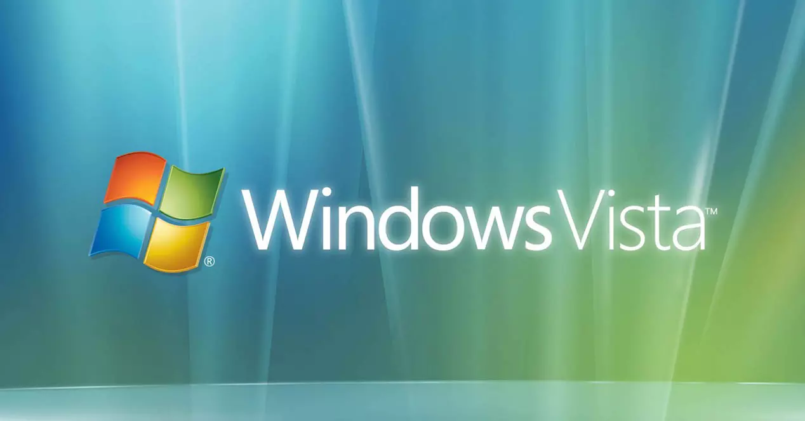

Windows Vista

Wersja: Windows Vista SP2 (ostatnia stabilna)
Data premiery: 30 Stycznia 2007
Architektura: 64-bit / 32-bit
Windows Vista – system, który miał być rewolucją… i był – ale głównie w wymaganiach sprzętowych 😅. Chociaż wyglądał pięknie dzięki Aero, jego wydajność i agresywna kontrola UAC przeszły do legendy. Ale hej – każda trauma czegoś nas uczy.
Data premiery: 30 Stycznia 2007
Architektura: 64-bit / 32-bit
Windows Vista – system, który miał być rewolucją… i był – ale głównie w wymaganiach sprzętowych 😅. Chociaż wyglądał pięknie dzięki Aero, jego wydajność i agresywna kontrola UAC przeszły do legendy. Ale hej – każda trauma czegoś nas uczy.
🛑 UWAGA!!! Ten system operacyjny od dnia 11 kwietnia 2017 r. nie jest już wspierany przez Microsoft.
Korzystanie z niego może wiązać się z zagrożeniem bezpieczeństwa oraz brakiem aktualizacji.
Korzystanie z niego może wiązać się z zagrożeniem bezpieczeństwa oraz brakiem aktualizacji.

🔧 Wymagania sprzętowe
- Procesor: 1 GHz
- Pamięć RAM: 1 GB
- Dysk twardy: 15 GB wolnego miejsca
- Karta graficzna: zgodna z DirectX 9 z WDDM i 128 MB RAM (dla Aero)
- Napęd DVD-ROM, ekran 800x600
💽 Instrukcja instalacji
- Pobierz obraz ISO klikając przycisk poniżej.
- Nagraj ISO na płytę DVD lub użyj narzędzia typu Rufus dla USB.
- Uruchom komputer z nośnika.
- Przejdź przez kreator instalacji – przygotuj się na dłuższą chwilę.
- Zainstaluj aktualizacje… i weź urlop.